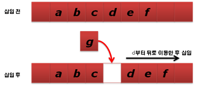
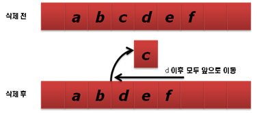

데큐 / 디큐 / 덱 (Deque : Double-End Queue)
Queue와Stack을 합쳐놓은 형태이다.- 두개의 포인터를 사용하여 양쪽에서 삽입과 삭제를 발생시킬수 있다.
특징
- 크기가 가변적이다.
- 리스트와 같이 데이터를 담을 수 있는 크기가 가변적이다.
- 앞과 뒤에서 삽입과 삭제가 가능하다.
- 구현이 쉽지 않다.
- 랜덤 접근이 가능하다.
- 중간에 데이터의 삽입 및 삭제가 용이하지 않다.
- 되도록이면 중간에 데이터를 삽입하거나 삭제하는 것은 피해야 하며, 삽입과 삭제를 중간에 한다면 삽입과 삭제한 위치의 데이터를 모두 이동해야 한다.
중간에 데이터 삽입 시

중간에 데이터 삭제 시

Deque 를 사용하는 경우
다음과 같은 경우 Deque 를 사용하면 효과적이다.
- 앞과 뒤에서 삽입 혹은 삭제를 한다.
- STL Container 라이브러리 중에서 Deque 사용할때 성능이 가장 좋다.
- 저장할 데이터의 개수가 가변적이다.
- Deque 는 동적으로 크기가 변하므로 유연하게 사용 가능하다.
- 검색을 거의 하지 않는다.
- 많은 데이터를 저장하며 검색이 필요한 경우라면
Map,Set,HashMap중 하나를 선택해서 사용하는편이 효과적이다.
- 많은 데이터를 저장하며 검색이 필요한 경우라면
- 데이터 접근을 랜덤하게 하고 싶다.
Vector와 같이 랜덤 접근이 가능하다. (사용방법도 같음)
참고자료
http://www.hanbit.co.kr/channel/category/category_view.html?cms_code=CMS3942847236